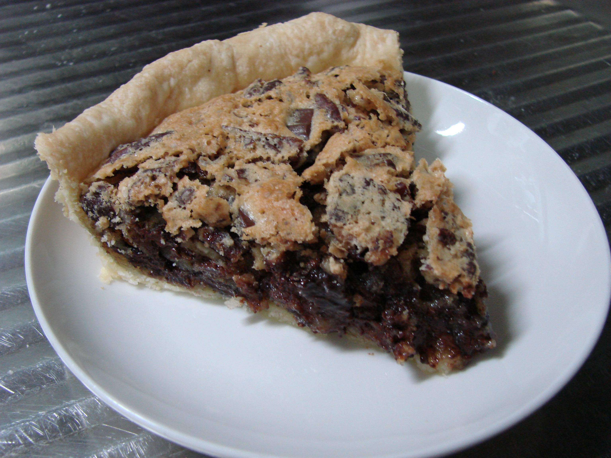

Derby Pie

Description
A yummy chocolate chip cookie pie with nuts. Usually served warm with ice cream or whipped cream.
Ingredients
- 1 Pie Crust Pastry
- 1 Cup Light Corn Syrup
- 1 Cup White Sugar
- 4 Eggs
- 1 1/4 Cups Chocolate Chips
- 1 Cup Chopped Pecans
- 1 1/2 Cup Butter, Melted
- 2 Tablespoons Bourbon (optional)
- 1 Teaspoon Vanilla Extract
Steps
- Preheat oven to 350 degrees F (175 degrees C). Press pie crust into a 9-inch pie plate.
- Beat corn syrup, white sugar, and eggs together in a bowl using an electric mixer on low speed until well blended; stir in chocolate chips, pecans, butter, bourbon, and vanilla extract. Pour mixture into the prepared pie crust.
- Bake in the preheated oven until set, 45 to 50 minutes.